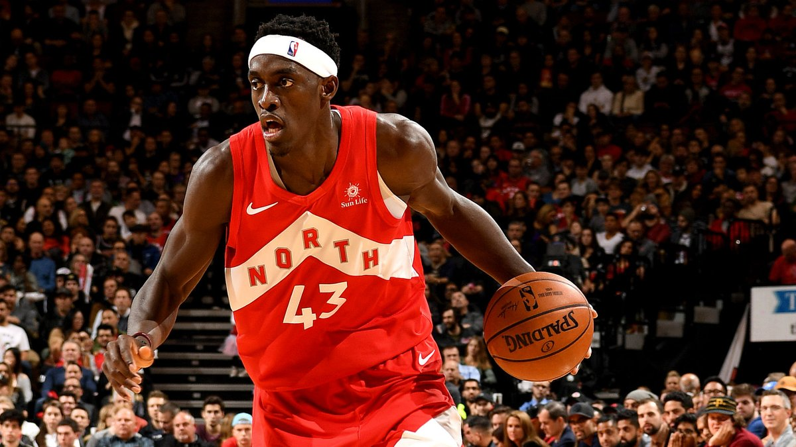
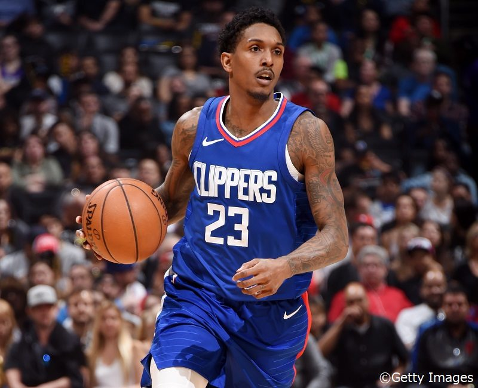
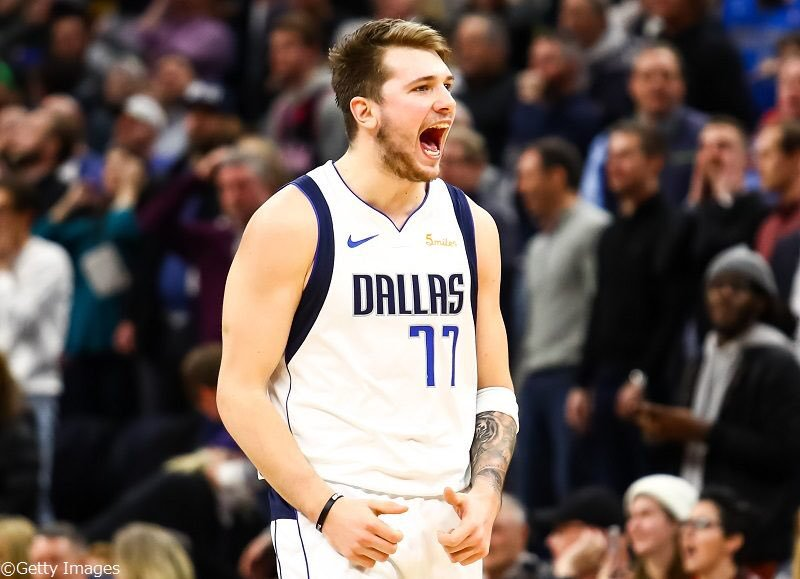
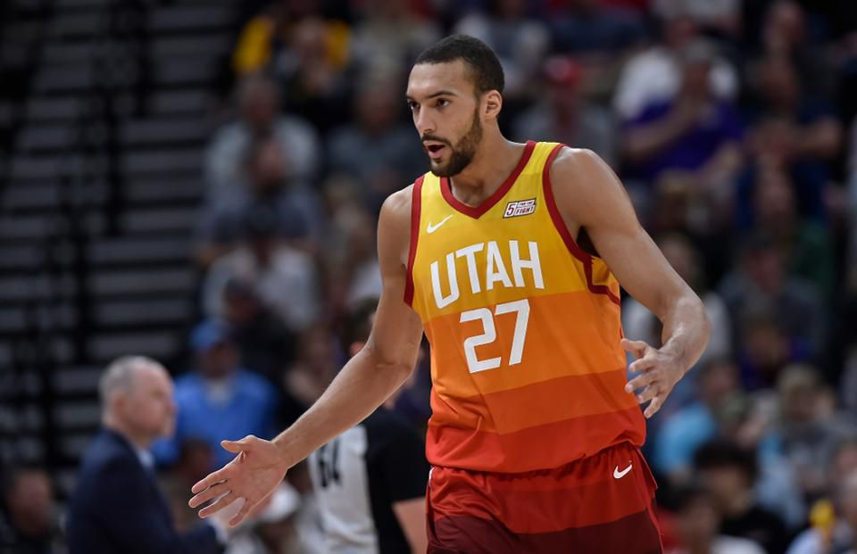

NBA Interesting
ここではNBAの面白さを伝えていけたらいいなぁと思っています！
2018-2019シーズンで活躍していた選手集
シーズンMVP
ヤニス・アデトクンポ Giannis Antetokounmpo

ゴール下に切り込んでいくスピードと、ダンクフィニッシュ出来る体の強さ、
そして高身長と身体能力を生かしたディフェンス力
化け物シャックと比べられた男
シーズンMIP
パスカル・シアカム Pascal Siakam

昨シーズン全く無名の選手で、今シーズン3p成功率が向上し、
手足の長さを生かしディフェンス力でもチームに貢献出来、
ファストブレイクでも足の速さを生かし、簡単にレイアップを打てる
優勝チームのキーパーソン
シーズン6thマン
ルー・ウィリアムズ Louis Tyrone Williams

前シーズンから2年連続受賞して、勝負所に強い選手
オフェンスでのクリエイティビティと爆発力が魅力
シーズンROY
ルカ・ドンチッチ Luka Dončić

新人とは思えないパスセンス、試合終盤での勝負強さを持ち合わせている
16歳からユーロリーグで活躍し、優勝経験もし、ユーロリーグMVPも受賞したこともある最強ルーキーである
今後レブロン・ジェームズが引退した後のNBAの顔となる選手になるだろう
シーズンDPOY
ルディ・ゴベア Rudy Gobert-Bourgarel

2年連続DPOYに選ばれたゴール下の番人
どんな相手でもブロックできる体の強さと手足の長さとジャンプするタイミングの上手さを持ち合わせている
この選手がいるだけでチームのディフェンスが良くなる
現NBAの顔
レブロン・ジェームズ LeBron Raymone James

8年連続NBAファイナルに出場する歴代最強オールラウンダー
マイケル・ジョーダンとどっちが最強か比べられる
今シーズンはプレーオフを逃したが、来シーズンは優勝することが出来るのか注目の選手です